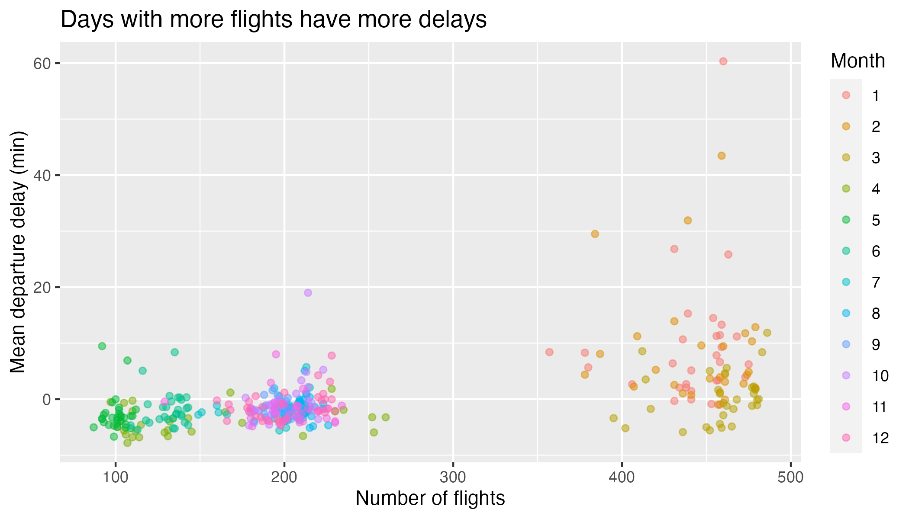

Flights
Part I: Understanding the Context of the Data
For the questions on the handout, consult the image of the data frame found in the slides linked above.
Part II: Computing on the Data
The data for this lab can be found in the flights data frame in the stat20data package. Run ?flights at the console to learn more about the columns. Where applicable, answer each question with one pipeline, which may include dplyr code, ggplot2 code or both.
Question 1
How many flights in the dataset left in the springtime and were destined for Portland, Oregon?
Question 2
Create a new variable called avg_speed that is the average speed of the plane during the flight, measured in miles per hour. Save it back into the data frame; you’ll use it later on.
Question 3
Arrange the data frame to figure out: what is the destination and delay time (in hrs) for the flight that was most delayed, i.e. that left the most ahead of schedule?
Question 4
Arrange the data frame to figure out: what is the destination and delay time (in hrs) for the flight that was least delayed, i.e. that left the most ahead of schedule?
Question 5
What proportion of all of the flights left on or ahead of schedule? For Oakland and SFO separately, what proportion of flights left on or ahead of schedule?
Question 6
For Oakland and SFO separately, what proportion of flights left on or ahead of schedule?
Question 7
How many flights left SFO during March 2020?
Question 8
How many flights left SFO during April 2020?
Question 9
Create a bar chart that shows the distribution by month of all the flights leaving the Bay Area (SFO and OAK). Do you any sign of an effect of the pandemic?
Question 10
Create a histogram showing the distribution of departure delays for all flights. Be sure to
- set the limits of the x-axis to focus on where most of the data lie,
- add a text annotation that explains the meaning of a negative departure delay,
- and below the plot a 1-2 that describes the shape and modality of the distribution.
Question 11
Create a data frame that contains the median and interquartile range for departure delays, grouped by carrier. Which carrier has the lowest typical departure delay? Which one has the least variable departure delays?
Question 12
Create a plot that captures the relationship of average speed vs. distance and describe the shape and structure that you see. What phenomena related to taking flights from the Bay Area might explain this structure?
Question 13
For flights leaving SFO, which month has the highest mean departure delay? What about the highest median departure delay? Which of these measures is more useful to know when deciding which month(s) to avoid flying if you particularly dislike flights that are severely delayed?
Question 14
Each individual airplane can be uniquely identified by its tailnumber in the same way that US citizens can be by their social security numbers. Which airplane flew the farthest in total during this year for which we have data? How many times around the planet does that translate to?
Question 15
What is the tailnumber of the fastest plane in the data set? What type of plane is it (google it!)? Be sure to be clear how you’re defining fastest.
Question 16
The plot below shows the relationship between the number of flights going out of SFO and the average departure delay. It illustrates the hypothesis that more flights on a given day would lead to a more congested airport which would lead to greater delays on average. Each point represents single day in 2020; there are 366 of them on the plot. Please form a single pipeline that will create this plot, starting with the raw data set.
